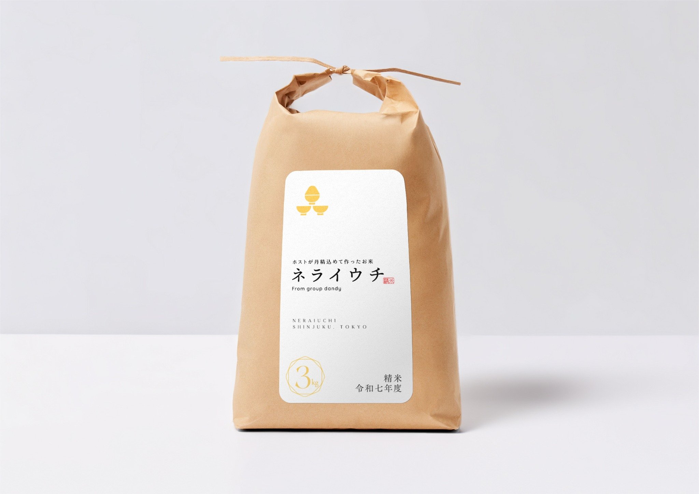
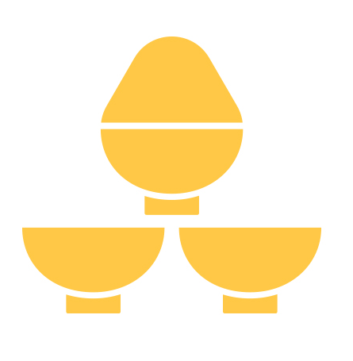
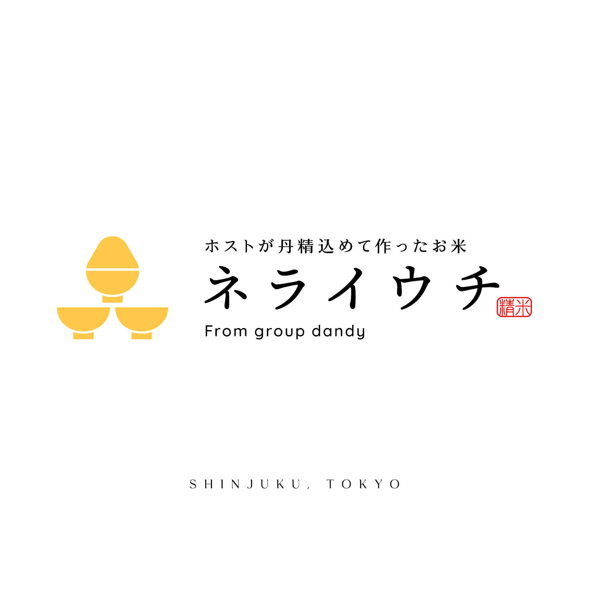

01 / 色
金色と朱色をアクセントに。
金色のシンボルに、朱色の印章を組み合わせた。お米のブランドらしい落ち着きの中に、ホスト文化の華やかさを加えている。
> loading portfolio
ロゴ・ビジュアルアイデンティティ
「ホストが作るお米」を、ブランドに。
エイプリルフールの架空の商品告知に向けた、ロゴとビジュアルの制作。

01 / 企画の背景
「ホストグループが丹精込めて作ったお米を発売する」。Xのエイプリルフール企画で、この架空の告知に使うブランドを制作した。意外な組み合わせの面白さを残しながら、実際に売られていそうな商品として見せることを目指した。
02 / ロゴの発想
お米を表す茶碗を、ホスト文化を象徴するシャンパンタワーのように配置。ひとつのシンボルで、商品の中身と企画の背景が伝わる形にした。

01 / お米を表すモチーフ
「米」を直感的に伝える、日常的な器。
02 / ホスト文化を表すモチーフ
ホスト文化の華やかさを想起させる形。
03 / ビジュアルの設計

01 / 色
金色のシンボルに、朱色の印章を組み合わせた。お米のブランドらしい落ち着きの中に、ホスト文化の華やかさを加えている。
02 / 文字
「ネライウチ」の和文ロゴタイプと印章で、和の印象をつくる。シンボルの意外性を受け止める、商品名の見せ方を整えた。
03 / パッケージ
クラフト紙の米袋にロゴと和文ラベルを配置したモックアップを制作。ロゴ単体だけでなく、手に取る商品として想像できる形で見せた。